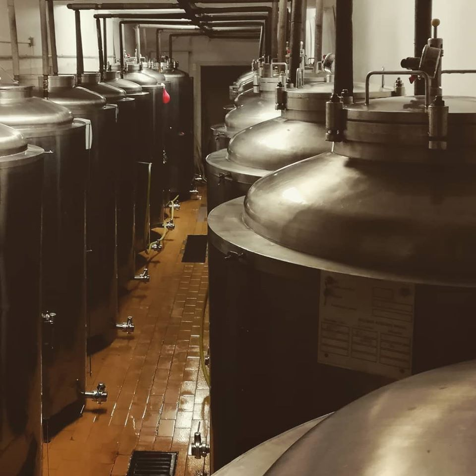

01
Kézzel, kis tételben
Kisüzemi mérték
Fontos szempont, hogy a söröknél legyen plusz hozzáadott érték, és azok ne egy hatalmas gyártósor egy-egy darabjai legyenek. Minden tétel a kezünk nyomát viseli.